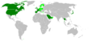

25 de março
| ◄ | Março | ► | ||||
| Dom | Seg | Ter | Qua | Qui | Sex | Sáb |
| 25 | 26 | 27 | 28 | 1 | 2 | 3 |
| 4 | 5 | 6 | 7 | 8 | 9 | 10 |
| 11 | 12 | 13 | 14 | 15 | 16 | 17 |
| 18 | 19 | 20 | 21 | 22 | 23 | 24 |
| 25 | 26 | 27 | 28 | 29 | 30 | 31 |
| Ano: | 2018 | ||||
| Década: | 2010 | ||||
| Século: | XXI | ||||
| Milênio: | 3º | ||||
25 de março é o 84.º dia do ano no calendário gregoriano (85.º em anos bissextos). Faltam 281 para acabar o ano.
Índice
Eventos históricos[editar | editar código-fonte]

1922: A foice e o martelo, símbolo oficial do PCB.

1996: Mal da vaca louca: Em verde escuro, os países que confirmaram casos da variante humana (CJD) e em verde claro, os países que declararam casos de bovinos com BSE.
- 708 — Papa Constantino sucede o Papa Sisínio como o 88.º papa.
- 717 — O imperador bizantino, Teodósio III, abdica do trono para tomar os votos monásticos.
- 1119 — Ricardo I é ferido por uma flecha, quando lutava contra a França, vindo a falecer em 6 de abril.
- 1306 — Roberto Bruce torna-se rei da Escócia.
- 1409 — Convocação do Concílio de Pisa.
- 1655 — A maior lua de Saturno, Titã, é descoberta por Christiaan Huygens.
- 1752 — A maior parte da Catedral Metropolitana de Buenos Aires desaba. Ela só seria reaberta 39 anos mais tarde.
- 1802 — O Tratado de Amiens é assinado como um "Tratado de Paz Definitivo" entre a França e o Reino Unido.
- 1807 — O Ato contra o Comércio de Escravos torna-se lei, abolindo o comércio de escravos no Império britânico.
- 1811 — Percy Bysshe Shelley é expulso da Universidade de Oxford pela publicação do panfleto A Necessidade do Ateísmo.
- 1821 — (Calendário juliano) Data tradicional do início da Guerra da Independência Grega. A guerra realmente começou em 23 de fevereiro de 1821. A data foi escolhida nos primeiros anos do Estado grego para que ela caísse no dia da Anunciação da Virgem Maria, reforçando os laços entre a Igreja Ortodoxa Grega e o recém-fundado Estado.
- 1824 — O imperador Dom Pedro I outorga a Primeira Constituição do Brasil.
- 1854 — Começam a funcionar os primeiros lampiões a gás no Rio de Janeiro.
- 1857 — O fonógrafo é patenteado.
- 1865 — A Rua 25 de Março, em São Paulo, é inaugurada.
- 1882 — É inaugurado o elevador do Bom Jesus em Braga. Constituiu o primeiro funicular construído na Península Ibérica.
- 1884 — Abolição da escravidão na Província do Ceará.
- 1908 — Fundação do Clube Atlético Mineiro, em Belo Horizonte.
- 1911 — Em Nova Iorque o incêndio na fábrica da Triangle Shirtwaist mata 146 trabalhadores.
- 1917 — A Igreja Ortodoxa Georgiana restaura a sua autocefalia abolida pelo Império Russo em 1811.
- 1918 — Criação da República Popular Bielorrussa.
- 1922 — Fundação do Partido Comunista Brasileiro, o PCB.
- 1924 — No aniversário da Independência grega, Aléxandros Papanastasíu proclama a Segunda República Helênica.
- 1933 — Os sindicatos são suprimidos na Alemanha.
- 1941 — O Reino da Iugoslávia junta-se às forças do Eixo com a assinatura do Pacto Tripartite.
- 1949 — Uma intensa campanha de deportações, conhecida como Operação Priboi, é conduzida na Estônia, Letônia e Lituânia. As autoridades soviéticas deportam mais de 92 000 pessoas do Báltico para as áreas remotas da União Soviética.
- 1957 — A Comunidade Econômica Europeia é criada com a Alemanha Ocidental, França, Itália, Bélgica, Países Baixos e Luxemburgo como os primeiros membros.
- 1958 — O caça supersônico canadense Avro Arrow faz seu primeiro voo.
- 1965 — Ativistas dos direitos civis liderados por Martin Luther King Jr. completam com sucesso a sua marcha de 4 dias de Selma até o capitólio, em Montgomery, Alabama.
- 1969 — Durante sua lua de mel, John Lennon e Yoko Ono realizam seu primeiro Bed-In for Peace no Amsterdam Hilton Hotel (até 31 de março).
- 1970 — O presidente Médici amplia o mar territorial brasileiro de 12 para 200 milhas marítimas.
- 1975 — Faisal da Arábia Saudita é baleado e morto por um sobrinho mentalmente doente.
- 1979 — O primeiro ônibus espacial totalmente funcional, Columbia, é entregue ao Centro Espacial John F. Kennedy para ser preparado para o seu primeiro lançamento.
- 1992 — O cosmonauta Sergei Krikalev retorna à Terra após uma permanência de dez meses a bordo da estação espacial Mir.
- 1995 — WikiWikiWeb, a primeira wiki do mundo, e parte do Portland Pattern Repository, é tornado público por Ward Cunningham.
- 1996 — O Comitê Veterinário da União Europeia proíbe a exportação de carne bovina britânica e seus subprodutos, em consequência da doença da vaca louca (encefalopatia espongiforme bovina).
- 2011 — O console Nintendo 3DS é lançado na Europa.
- 2015 — Arábia Saudita e seus aliados realizam ataques aéreos contra militantes houthis após seu avanço sobre Áden, no Iêmen.
Nascimentos[editar | editar código-fonte]


{kind=link}
{kind=link}
{kind=link}
{kind=link}
{kind=link}
{kind=link}
{kind=link}
{kind=link}
{kind=link}
{kind=link}
{kind=link}
{kind=link}
{kind=link}
{kind=link}
Anterior ao século XIX[editar | editar código-fonte]
- 1252 — Conradino da Germânia, Duque da Suábia (m. 1268).
- 1297 — Andrônico III Paleólogo, imperador bizantino (m. 1341).
- 1345 — Branca de Lencastre, nobre inglesa (m. 1369).
- 1347 — Catarina de Siena, santa italiana (m. 1380).
- 1479 — Basílio III de Moscou, grão-príncipe de Moscou (m. 1533).
- 1533 — Filipe, Príncipe de Portugal (m. 1539).
- 1538 — Cristóvão Clávio, matemático e astrônomo alemão (m. 1612).
- 1545 — João II, Duque de Schleswig-Holstein-Sonderburg-Plön (m. 1622).
- 1658 — John Asgill, escritor e político inglês (m. 1738).
- 1699 — Johann Adolph Hasse, compositor alemão (m. 1783).
- 1716 — Aleksey Antropov, pintor russo (m. 1795).
- 1730 — Antonio Turra, médico e botânico italiano (m. 1796).
- 1739
- Eduardo, Duque de Iorque e Albany (m. 1767).
- Josefa de los Dolores, religiosa e escritora chilena (m. 1823).
- 1764 — Jesuíno do Monte Carmelo, pintor brasileiro (m. 1819).
- 1767 — Joaquim Murat, Rei de Nápoles (m. 1815).
- 1781 — Eusébio de Queirós Coutinho da Silva, magistrado brasileiro (m. 1842).
- 1782 — Carolina Bonaparte, nobre francesa (m. 1839).
- 1786 — Giovanni Battista Amici, astrônomo, engenheiro, físico e matemático italiano (m. 1863).
Século XIX[editar | editar código-fonte]
- 1804 — João Francisco de Sousa Coutinho, compositor e político brasileiro (m. 1896).
- 1806 — Francisco de Assis e Oliveira Borges, nobre brasileiro (m. 1879).
- 1808 — José de Espronceda, poeta espanhol (m. 1842).
- 1821 — Robert Bentley, botânico britânico (m. 1893).
- 1834 — Agostinho Ermelino de Leão, político brasileiro (m. 1901).
- 1839 — Augusto da Cunha Castelo Branco, político brasileiro (m. 1898).
- 1844 — Adolf Engler, botânico alemão (m. 1930).
- 1852 — Gérard Cooreman, político belga (m. 1926).
- 1863 — William Robert Ogilvie-Grant, ornitólogo britânico (m. 1924).
- 1867
- Arturo Toscanini, maestro italiano (m. 1957).
- Luz de Almeida, bibliotecário e político português (m. 1939).
- Gutzon Borglum, escultor estado-unidense (m. 1941).
- 1873 — Rudolf Rocker, escritor e orador alemão (m. 1958).
- 1881 — Béla Bartók, compositor húngaro (m. 1945).
- 1886 — Atenágoras I de Constantinopla (m. 1972).
- 1887
- Chuichi Nagumo, almirante japonês (m. 1944).
- Robert Quillen, humorista, jornalista e cartunista estado-unidense (m. 1948).
- 1890 — Jean Guéhenno, escritor e crítico literário francês (m. 1978).
- 1892 — Helena Antipoff, psicóloga e pedagoga bielorrussa (m. 1974).
- 1896
- Irineu Bornhausen, político brasileiro (m. 1974).
- Ray Enright, cineasta estado-unidense (m. 1965).
- 1897 — Jean Epstein, cineasta polonês (m. 1953).
- 1899 — Burt Munro, motociclista neozelandês (m. 1978).
Século XX[editar | editar código-fonte]
1901–1950[editar | editar código-fonte]
- 1901
- Raymond Firth, etnólogo neozelandês (m. 2002).
- Ed Begley, ator estado-unidense (m. 1970).
- 1907 — Sávio Cotta de Almeida Gama, político brasileiro (m. 1985).
- 1908
- David Lean, cineasta britânico (m. 1991).
- Mário Peixoto, cineasta e escritor brasileiro (m. 1992).
- Charles Burke Elbrick, diplomata estado-unidense (m. 1983).
- Moisés Lupion, político brasileiro (m. 1991).
- 1911
- Jack Ruby, assassino estado-unidense (m. 1967).
- Luciano dos Santos, pintor português (m. 2006).
- 1912 — Jean Vilar, ator e diretor francês (m. 1971).
- 1914 — Norman Borlaug, cientista estado-unidense (m. 2009).
- 1915 — Valdemar de Moura Ramos, político brasileiro (m. ?).
- 1919 — Rui Cardoso Nunes, jornalista, poeta e escritor brasileiro (m. 2009).
- 1921
- Simone Signoret, atriz francesa (m. 1985).
- José Gomes, religioso brasileiro (m. 2002).
- 1923 — Costinha, humorista e ator brasileiro (m. 1995).
- 1924
- Joaquim Silva Torres, desenhista de jóias e relojoeiro brasileiro (m. 1999).
- Roberts Blossom, ator estado-unidense (m. 2011).
- 1928 — James Lovell, astronauta estado-unidense.
- 1929 — Hélio Souto, ator brasileiro (m. 2001).
- 1932 — Reynaldo Boury, diretor de televisão brasileiro.
- 1934
- Gloria Steinem, autora estado-unidense.
- Johnny Burnette, músico e cantor estado-unidense (m. 1964).
- Genir Destri, político brasileiro (m. 2006).
- 1937 — Imre Mathesz, futebolista e treinador de futebol húngaro (m. 2010).
- 1938
- Fritz d'Orey, ex-automobilista brasileiro.
- Daniel Buren, artista francês.
- 1940
- Anita Bryant, cantora estado-unidense.
- Mina, cantora italiana.
- 1941
- Erhard Busek, político austríaco.
- Jacques Simon, futebolista francês (m. 2017).
- 1942
- Aretha Franklin, cantora estado-unidense.
- Aleksander Sopliński, político polonês.
- 1945 — Leila Diniz, atriz brasileira (m. 1972).
- 1946 — Genésio Tureck, político brasileiro.
- 1947
- Elton John, músico, cantor e compositor britânico.
- Tadeu Palácio, médico e político brasileiro.
- 1948 — Bonnie Bedelia, atriz estado-unidense.
- 1949 — António Mega Ferreira, escritor e jornalista português.
1951–2000[editar | editar código-fonte]
- 1951
- Chris Stewart, escritor britânico.
- Leo Samama, compositor e musicólogo neerlandês.
- 1952 — Jung Chang, escritora chinesa.
- 1953
- Luís Carlos Borges, músico, compositor e intérprete brasileiro.
- Marcos Leite, maestro, compositor e arranjador brasileiro (m. 2002).
- Maria Lúcia Netto dos Santos, política brasileira (m. 2012).
- Christos Ardizoglou, ex-futebolista grego.
- 1956
- Jerzy Materna, político polonês.
- Wojciech Ziemniak, político polonês.
- Benjamin Zymler, engenheiro brasileiro.
- Matthew Garber, ator britânico (m. 1977).
- 1957 — Américo Monteiro, cantor português.
- 1958
- John Ensign, político estado-unidense.
- Manuel Serifo Nhamadjo, político guinéu.
- 1959 — Alexandre Kalil, empresário e político brasileiro.
- 1960
- Brenda Strong, atriz estado-unidense.
- João Camargo, ator e diretor brasileiro.
- 1961
- Vasiliy Rats, ex-futebolista ucraniano.
- Yoon Deuk-yeo, ex-futebolista e treinador de futebol sul-coreano.
- 1962 — Marcia Cross, atriz estado-unidense.
- 1964 — José Pintos Saldanha, ex-futebolista uruguaio.
- 1965
- Sarah Jessica Parker, atriz estado-unidense.
- Stefka Kostadinova, atleta de salto em altura búlgara.
- María Isabel Urrutia, ex-halterofilista colombiana.
- Mary Wayte, ex-nadadora estado-unidense, campeã olímpica.
- Mario Lepe, ex-futebolista chileno.
- 1966
- Jeff Healey, vocalista e guitarrista canadense (m. 2008).
- Melora Creager, músico estado-unidense.
- Tatjana Patitz, modelo e atriz alemã.
- Tom Glavine, ex-jogador de beisebol estado-unidense.
- Eduardo Agni, violonista e compositor brasileiro.
- 1967
- Debi Thomas, patinadora artística estadunidense.
- Paulão, ex-futebolista brasileiro.
- 1969
- Dum-Dum, rapper brasileiro.
- Pierangelo Manzaroli, ex-futebolista e treinador de futebol samarinês.
- 1970
- Kari Matchett, atriz canadense.
- Magnus Larsson, ex-tenista sueco.
- 1971 — Ian Cox, ex-futebolista trinitário.
- 1972
- Roberto Acuña, futebolista paraguaio.
- Giniel de Villiers, automobilista sul-africano.
- Phil O'Donnell, futebolista britânico (m. 2007).
- Noel Pix, músico alemão.
- Frank Solari, guitarrista brasileiro.
- Carlos Thiré, ator brasileiro.
- 1973
- Alexandra Quinn, atriz canadense.
- Michaela Dorfmeister, esquiadora austríaca.
- Anders Fridén, músico sueco.
- 1974
- Laz Alonso, ator estado-unidense.
- Finley Quaye, músico britânico.
- 1975
- Viviane Araújo, modelo e atriz brasileira.
- Melanie Blatt, cantora britânica.
- Juvenile, rapper estado-unidense.
- Gonzalo Romero, futebolista guatemalteco.
- Gaspard Manesse, ator francês.
- 1976
- Wladimir Klitschko, boxeador ucraniano.
- Bakhtiyor Ashurmatov, ex-futebolista uzbeque.
- 1977
- Daniela Faria, atriz brasileira.
- Édgar Ramírez, ator venezuelano.
- 1978
- Everaldo Coelho, ilustrador brasileiro.
- Teanna Kai, atriz estado-unidense.
- Gennaro Delvecchio, ex-futebolista italiano.
- 1979
- Sharbel Touma, ex-futebolista sueco.
- Yevgeniy Tarasov, ex-futebolista cazaque.
- Paolo Castellini, ex-futebolista italiano.
- Raúl Orosco, árbitro de futebol boliviano.
- Lee Pace, ator estado-unidense.
- 1980
- Eduardo Fischer, nadador brasileiro.
- Bojan Isailović, futebolista sérvio.
- Olivier Patience, tenista francês.
- 1981
- Julián de Guzmán, futebolista canadense.
- Márcio Ivanildo da Silva, futebolista brasileiro.
- Michel Alves, futebolista brasileiro.
- Gianluca Pegolo, futebolista italiano.
- José de Armas, ex-tenista venezuelano.
- Sufrim Lopes, futebolista guinéu.
- Park Yong-ho, futebolista sul-coreano.
- 1982
- Danica Patrick, automobilista estado-unidense.
- Ekaterina Khilko, ginasta uzbeque.
- Sean Faris, ator e modelo estado-unidense.
- Alex, futebolista brasileiro.
- Felipe Alves de Souza, futebolista brasileiro.
- Álvaro Saborío, ex-futebolista costarriquenho.
- Michael Lammer, ex-tenista suíço.
- 1983
- Túlio Souza, futebolista brasileiro.
- Nelson Rivas, ex-futebolista colombiano.
- Martín Silva, futebolista uruguaio.
- Njazi Kuqi, futebolista finlandês.
- 1984 — Katharine McPhee, cantora estado-unidense.
- 1985
- Carmen Rasmusen, cantora estado-unidense.
- Nicolás Navarro, futebolista argentino.
- Víctor Cáceres, futebolista paraguaio.
- 1986
- Eduardo Ramos, futebolista brasileiro.
- Bruno Aguiar, futebolista brasileiro.
- Mensur Kurtiši, futebolista macedônio.
- Ibor Bakar, futebolista comorense.
- 1987
- Shaun Ontong, futebolista australiano.
- Victor Obinna, futebolista nigeriano.
- Raffaele De Rosa, motociclista italiano.
- 1988
- Ryan Lewis, músico, produtor e DJ norte-americano.
- Alex Moraes, futebolista brasileiro.
- Sergey Afanasyev, automobilista russo.
- Erik Knudsen, ator canadense.
- 1989
- Alyson Michalka, atriz e cantora estado-unidense.
- Scott Sinclair, futebolista britânico.
- Alexandre Marsoin, automobilista francês.
- Patric Cabral Lalau, futebolista brasileiro.
- Jimmy Burgho, futebolista francês.
- 1990
- Mehmet Ekici, futebolista turco.
- Alexander Esswein, futebolista alemão.
- 1991
- Seychelle Gabriel, atriz estado-unidense.
- Diego Calvo, futebolista costarriquenho.
- 1992
- Elizabeth Lail, atriz estadunidense.
- Valentin Eysseric, futebolista francês.
- Nuno Miguel Monteiro Rocha, futebolista cabo-verdiano.
- 1993
- Leonardo Spinazzola, futebolista italiano.
- Sam Johnstone, futebolista britânico.
- 1995 — Nataniel Reis, futebolista timorense.
- 1997 — Prakash Neupane, rapper e músico nepalês.
- 2000 — Jadon Sancho, futebolista britânico.
Mortes[editar | editar código-fonte]
{kind=link}
{kind=link}
{kind=link}
{kind=link}
{kind=link}
Anterior ao século XIX[editar | editar código-fonte]
- 1005 — Kenneth III da Escócia (n. 967).
- 1223 — Afonso II de Portugal (n. 1185).
- 1458 — Íñigo López de Mendoza, 1º Marquês de Santillana (n. 1398).
- 1537 — Carlos de Bourbon, duque de Vendôme (n. 1489).
- 1625 — Giambattista Marino, poeta italiano (n. 1569).
- 1677 — Václav Hollar, artista tcheco (n. 1607).
- 1712 — Nehemiah Grew, médico e botânico britânico (n. 1641).
- 1736 — Nicholas Hawksmoor, arquiteto britânico (n. 1661).
- 1751 — Frederico I da Suécia (n. 1676).
- 1799 — José Luís de Mascarenhas, nobre português (n. 1721).
Século XIX[editar | editar código-fonte]
- 1801 — Novalis, poeta alemão (n. 1772).
- 1828 — Pedro de Lancastre da Silveira Castelo Branco Sá e Meneses, nobre português (n. 1771).
- 1847 — Henrique da Fonseca de Sousa Prego, militar português (n. 1768).
- 1857 — William Colgate, empresário estado-unidense (n. 1783).
- 1860 — James Braid, médico britânico (n. 1795).
- 1869 — José Bernardo da Silva Cabral, político português (n. 1801).
- 1873 — Wilhelm Marstrand, pintor dinamarquês (n. 1810).
- 1895 — Antônio Eneias Gustavo Galvão, militar brasileiro (n. 1832).
- 1896 — Américo Brasiliense de Almeida Melo, político brasileiro (n. 1833).
- 1898 — James Payn, escritor britânico (n. 1830).
Século XX[editar | editar código-fonte]
- 1914 — Frédéric Mistral, poeta francês (n. 1830).
- 1918 — Claude Debussy, compositor francês (n. 1862).
- 1924 — Wong Fei Hung, mestre de artes marciais chinês (n. 1847).
- 1929 — Robert Ridgway, biólogo estado-unidense (n. 1850).
- 1933 — João de Deus Mena Barreto, militar brasileiro (n. 1874).
- 1939 — José Petitinga, espírita e escritor brasileiro (n. 1866).
- 1940 — Antônio Vicente Bulcão Viana, militar e político brasileiro (n. 1875).
- 1948 — Bridget Sullivan, empregada doméstica irlandesa (n. 1866).
- 1961 — Arthur Drewry, dirigente esportivo britânico (n. 1891).
- 1962 — Libero Liberati, motociclista italiano (n. 1926).
- 1964 — Pentti Eelis Eskola, geólogo finlandês (n. 1883).
- 1970 — Mirita Casimiro, actriz portuguesa (n. 1914).
- 1980 — Milton Erickson, psiquiatra estado-unidense (n. 1901).
- 1981 — Edward Lasker, escritor e enxadrista estado-unidense (n. 1885).
- 1985 — Ema D'Ávila, atriz e comediante brasileira (n. 1918).
- 1991 — Marcel Lefebvre, religioso francês (n. 1905).
- 1994
- Max Petitpierre, político suíço (n. 1899).
- Angelines Fernández, atriz espanhola (n. 1922).
- 1997 — Baltasar, futebolista brasileiro (n. 1926).
Século XXI[editar | editar código-fonte]
- 2003 — José Barros Moura, político português (n. 1944).
- 2005 — Wilbur Howard Duncan, botânico estado-unidense (n. 1910).
- 2006
- Rocío Dúrcal, atriz e cantora espanhola (n. 1944).
- Richard Fleischer, cineasta estado-unidense (n. 1916).
- 2007
- Andranik Margaryan, político armênio (n. 1951).
- Togo Póvoa de Barros, político brasileiro (n. 1914).
- Marshall Rogers, desenhista estado-unidense (n. 1950).
- 2008 — Abby Mann, produtor e roteirista estado-unidense (n. 1927).
- 2011 — Thomaz Farkas, fotógrafo brasileiro (n. 1924).
- 2012 — Antonio Tabucchi, poeta e escritor italiano (n. 1943).
Feriados e eventos cíclicos[editar | editar código-fonte]
- No cristianismo, 25 de Março é tipicamente celebrado como o dia da Anunciação da Virgem Maria desde que ele não caia em um Domingo ou durante as semanas Santa ou da Páscoa
- Brasil – Dia Nacional da Comunidade Árabe
- Ceará (Brasil): Data Magna do Estado do Ceará
- Grécia: Dia da Independência
- Eslovênia: Dia das Mães
- Bielorrússia: Dia da Liberdade
- Igreja Católica: São Dimas, o Bom Ladrão
Outros calendários[editar | editar código-fonte]
- No calendário romano era o 8º dia (VIII) antes das calendas de Abril.
- No calendário litúrgico tem a letra dominical G para o dia da semana.